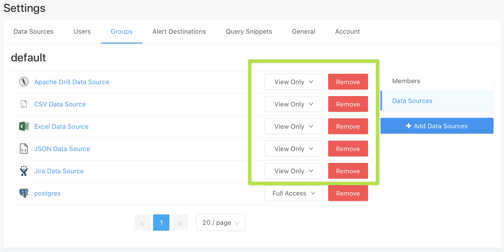

Summary
Today, we are releasing V10.1 which includes fixes for three security vulnerabilities. Click the links for complete details to see whether your installation is affected:
- Insecure default configuration affects installations where
REDASH_COOKIE_SECRETis not set explicitly (CVE-2021-41192) - SSRF vulnerability affects installations that enabled URL-loading data sources (CVE-2021-43780)
- Incorrect usage of
stateparameter in OAuth client code affects installations where Google Login is enabled (CVE-2021-43777)
The V10.1 release page is live on Github now.
As always we recommend upgrading to the latest version, especially if any of the security issues affect your deployment. If this is not possible, please refer to the disclosures for information about possible workarounds and mitigation steps.
This release also incorporates these two PR’s which didn’t merge before the V10 release:
The docker tag for this release is redash/redash:10.1.0.b50633
Huge thanks to Ian Carroll and a reporter who wished to remain anonymous for disclosing these vulnerabilities and helping us make Redash safer.
Upgrading
These instructions are duplicated from the V10.1 Release Page
From V10.0:
Follow our standard upgrade process (reproduced below).
- Make sure to backup your data. You only need to backup Redash’s PostgreSQL database (the database Redash stores metadata in, not the ones you might be querying) as the data in Redis is transient.
- Change directory to /opt/redash.
- Update
/opt/redash/docker-compose.ymlRedash image reference toredash/redash:10.1.0.b50633 - Stop Redash services:
docker-compose stop server scheduler scheduled_worker adhoc_worker(you might need to list additional services if you updated your configuration) - (No migrations are needed when upgrading from 10.0)
- Read the
Impactsegment at this link. If your installation is affected, follow the instructions under thePatchesheading to secure the secret fields in your database. - Start services with docker-compose up -d
From V9:
Follow the same steps as V10 but for step 5:
- Apply migration:
docker-compose run --rm server manage db upgrade
From V8 or earlier
- Follow the complete steps outlined in the V10.0 release but use this Docker Tag in step 3:
redash/redash:10.1.0.b50633 - Read the
Impactsegment at this link. If your installation is affected, follow the instructions under thePatchesheading to secure the secret fields in your database.
Vulnerabilities
We have reproduced the formal disclosure for each vulnerability below.
CVE-2021-41192 - HIGH SEVERITY - Insecure default configuration of secret keys
Impact
If you configured Redash without explicitly specifying the REDASH_COOKIE_SECRET environment variable, Redash instead used a default value that is the same across all installations. In such cases, the instance is vulnerable to attackers being able to forge sessions using the known default value.
In conjunction with removing the default value to make sure that a value is always provided, we have added a page to our documentation about setting and managing secret keys in Redash.
Our thanks to Ian Carroll (@iangcarroll on Github) for responsibly disclosing this vulnerability.
How can I tell if my instance is affected?
You can verify whether your instance is affected by checking whether the REDASH_COOKIE_SECRET environment variable is set for your installation. If it is not present in your configuration then you should follow the steps to secure instance, outlined in the Patches section below
If you are using any of Redash’s official cloud images (AWS, GCE, Digital Ocean) or used our setup script to generate your Docker installation this vulnerability is most likely mitigated already. Please check /opt/redash/env to confirm that an explicit value for REDASH_COOKIE_SECRET has been set.
Patches
A software patch is not required to fix this vulnerability. Instead, an admin must modify Redash’s configuration through environment variables. Depending on the version of Redash, an admin may also need to run a CLI command to re-encrypt some fields in the database (see below).
The current master and release/10.0.x branches have removed the default value for REDASH_COOKIE_SECRET. All future releases will also require this to be set explicitly. For Docker installations, you can upgrade to Docker Tag redash/redash:10.1.0.b50633.
For existing installations, you will need to ensure that explicit values are set for the REDASH_COOKIE_SECRET and REDASH_SECRET_KEY variables.
V7 and later
Starting in version 7, Redash encrypts data source and alert destination details in the database using the REDASH_SECRET_KEY environment variable.
If you have not set REDASH_SECRET_KEY explicitly:
- Set the
REDASH_SECRET_KEYenvironment variable to be the default (current) cookie_secret :c292a0a3aa32397cdb050e233733900f - Set
REDASH_COOKIE_SECRETto a different value [^1] - Use the Redash CLI to re-encrypt using a secret key different from step 1 (see docs)
- Set the
REDASH_SECRET_KEYenvironment variable to the new value you used in step 3 - Restart Redash
If you have set REDASH_SECRET_KEY explicitly:
- Set the
REDASH_COOKIE_SECRETenvironment variable [^1] - Restart Redash
V6 and earlier
If you’re using Redash version 6 or older (before we introduced data sources encryption):
- Set the
REDASH_COOKIE_SECRETenvironment variable [^1] - Restart Redash
For more information
If you have any questions or comments about this advisory:
- Open an issue in getredash/redash if you believe further development is needed.
- Start a thread in the forum.
[^1]: Read about how to pick a secret key in our docs
CVE-2021-43777 - MODERATE SEVERITY - Insecure use of state parameter for Google Login
Impact
If you do not use Google Login for your instance of Redash, this vulnerability does not affect you.
The current implementation of Google Login (via OAuth) incorrectly uses the state parameter to pass the next URL to redirect the user to after login. The state parameter should be used for a CSRF token, not a static and easily predicted value.
Our thanks to the reporter of this vulnerability, who wished to remain anonymous.
Patches
The current master and release/10.x.x branches address this by replacing Flask-Oauthlib with Authlib which automatically provides and validates a CSRF token for the state variable. The new implementation stores the next URL on the user session object.
Affected users should upgrade to V10.1. For Docker installations, you can upgrade to Docker Tag redash/redash:10.1.0.b50633.
Workarounds
Disabling Google Login will mitigate the vulnerability.
- First you should re-enable password login for your instance.
- Then disable Google login.
- After this, each user will need to reset their password from the log-in screen.
References
Redash Authentication Guide
Google’s Official guidance on the state token
For more information
If you have any questions or comments about this advisory:
- Open an issue in getredash/redash if you believe further development is needed.
- Start a thread in the forum.
CVE-2021-43780 - MODERATE SEVERITY - URL-loading data sources subject to SSRF vulnerability
Impact
The current implementation of URL-loading data sources like JSON, CSV, or Excel is vulnerable to advanced methods of Server Side Request Forgery (SSRF). These vulnerabilities are only exploitable on installations where a URL-loading data source is enabled.
Our thanks to Ian Carroll (@iangcarroll on Github) for responsibly disclosing this vulnerability.
Patches
The current master and release/10.x.x branches address this by applying the Advocate library for making http requests instead of the requests library directly. Users should upgrade to version 10.1 to receive this patch. For Docker installations, you can upgrade to Docker Tag redash/redash:10.1.0.b50633.
Workarounds
To mitigate the vulnerability without upgrading:
- You can disable the vulnerable data sources entirely, by adding the following env variable to your configuration. This will make them unavailable inside the webapp.
REDASH_DISABLED_QUERY_RUNNERS = "redash.query_runner.excel,redash.query_runner.csv,redash.query_runner.json_ds,redash.query_runner.url,redash.query_runner.drill,redash.query_runner.jira"
- You can switch any data source of the following types to be “View Only” for all groups on the Settings > Groups > Data Sources screen:
- JSON
- CSV
- Excel
- Apache Drill
- Jira
- URL

For more information
If you have any questions or comments about this advisory:
- Open an issue in getredash/redash if you believe further development is needed.
- Start a thread in the forum.